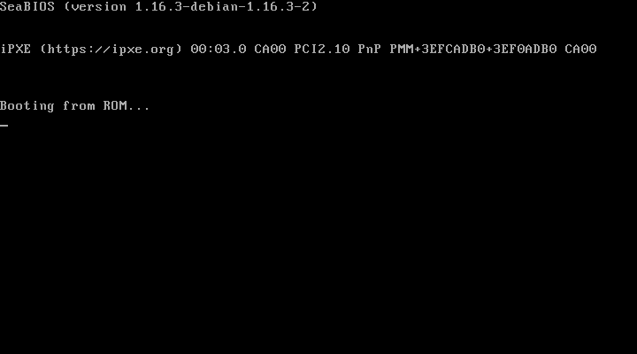

Two computers steer the same actuator. Only one commands. When it dies, freezes or loses its cable, the other takes over within a bounded, measured delay — and the machine that was evicted can never impose anything again, even if it wakes up believing it is still in charge.
Apache-2.0C11 core, no clock · no file · no socket · no mallocQNX 8.0 targetruns on a plain PC, no root
The problem
Without a steering column, an assistance computer that goes silent leaves the wheels without a command. With nobody holding the wheel, nobody can take over within the second. Silence is no longer a safe state. Doubling the computer moves the difficulty to one question: who commands, and how do you change hands without a bump and without two masters?
The usual answer is a heartbeat and a timeout. The timeout is a guess: too short and you depose a healthy machine that was merely late; too long and the actuator stays without a command. Two neighbouring QNX projects on GitHub picked 100 ms and 2 000 ms. Relais targets two periods — 10 ms at 200 Hz — and, more importantly, does not have to guess.
Four ideas that carry it
1 · The actuator is the arbiter
It hands out mandate numbers and withdraws one only on its own evidence: p+1 consecutive ticks without a valid order from the holder, or a cession from it. Two machines that no longer agree therefore cannot both command. The "is it dead or is the cable cut?" dilemma is settled without a third computer.
2 · The actuator is the clock
It beats a tick every period and every order names the tick it targets. No clock is synchronised between the machines, and an order computed before a freeze is stale by construction.
3 · The will (testament)
Every order carries the values expected for the next N ticks. During a handover the actuator plays the departed holder's plan, so the physical curve shows no hole.
4 · Proof by exploration — and proof of the proof
The protocol core is a pure state machine, explored exhaustively on a PC, then killed, frozen and unplugged for real. Eight deliberately defective builds (mutants) check that the bench actually sees faults.
Architecture
PC Linux, no root required
┌──────────────┐ link between computers ┌──────────────┐
│ machine A │◄─────────►┌──────────┐◄───►│ machine B │
│ holder │ │programmable│ │ second │
└──────┬───────┘ │ cable │ └───────┬──────┘
│ └──────────┘ │
▼ ▼
┌──────────────────────────────────────────────────────────┐
│ actuator: arbiter + rack model + tempo + the journal │
└───────────────────────────┬──────────────────────────────┘
▼
orchestrator ──► QMP: stop, cont, quit, set_link
└─► invariant verifier ──► report
Each computer is three isolated processes at fixed priorities: relais-net (62, the only one with a socket), relais-core (61, the resource manager /dev/relais and the protocol state machine), relais-ctl (60, the control law as a service). A crash is known, not guessed: peers see the connection close and the machine cedes the mandate within the tick.
Measured, not asserted
10 000 330
states explored exhaustively, two simultaneous faults, 51 s — 0 violation
19 659
simulated fault runs: swept deaths, freezes up to 8 s, cut links, forged and stale frames — 0 failure
1 000 000 000
ticks simulated at level C — 0 violation, worst gap 0
8 / 8
mutants flagged, each by the invariant it was meant to break
5 651
unit and protocol checks green
0
tick without a fresh order during a handover, level C
Guarantee
Base level (S)
Full level (C)
Gap between two fresh orders after the holder dies
≤ 3 periods = 15 ms at 200 Hz, bridged by the will (measured: 1 tick)
zero — the certified second's shadow substitutes from the first miss
Double command
impossible by construction, then explored exhaustively
same, plus order-vs-shadow comparison flags a miscomputing machine
The revenant (frozen then thawed)
its stale orders are dropped twice over: wrong holder, wrong tick
same; it rejoins as a second without disturbing the command
Both machines gone
the will plays out, then the fallback law within N+1 ticks
65 capabilities in 10 themes, plus 25 items discovered in the tree. Each card names the requirements it answers, the document that argues it, the code that implements it, and the command that reproduces the number.
The core — one C11 library, three builds
No clock, no file, no socket, no allocation: the same source is the QNX process, the simulator and the explorer.
Frames: CRC-32C and a keyed MAC
Every frame carries a checksum and a SipHash-2-4 tag; a forged or corrupted frame is rejected before it reaches the arbiter.
It hands out the mandate numbers and withdraws one only on its own evidence: p+1 ticks without a valid order, or a cession. Two machines that disagree cannot both command.
The order of the holder, else the shadow of the second certified machine, else the testament, else the fallback law: one decision per tick, and the precedence is written down.
The second certified machine is allowed to disagree with the holder within a declared tolerance; the tolerance is declared, not implicit, and off by default.
The actuator integrates the steering model step by step; the simulator, the explorer and the tests share the same code, so a proof is a proof of the shipped behaviour.
Every order carries the values expected for the next N ticks; during a handover the actuator plays the departed holder's plan, so the physical curve shows no hole.
19 659 campaign runs, 10 million explored states, one billion simulated ticks — and the numbers are published with the command that reproduces each of them.
The explorer proves the invariants up to a depth; the induction engine proves that if they hold on k consecutive steps they hold for ever — so the claim is no longer 'true for 10 million states'.
A bounded-exhaustive proof over the C source itself
The frame decoder and the arbiter are exercised over an exhausted input space, with the harnesses for CBMC and Frama-C ready for when those tools are installed.
Forged orders, usurped status, stolen keys, replays and floods are played against the arbiter; the safe degraded mode is the expected answer, never a second winner.
Nominal slalom, death, freeze, cut, slow machine, double death, and a sweep over every phase of a handover: each scenario is a JSON file the campaign plays at both levels.
A seeded UDP impairment proxy applies loss, bursts, duplication, reordering and asymmetric delay between the two machines, and the protocol is measured under each profile.
A read-only dashboard follows the journal live — mandate, holder, command source, witness lamp, curves — and the same run is exported to MCAP for any standard viewer.
Actuator, node, control, net and ctl as real QNX processes, with the stubs that let them build on a PC and the image fragments that put them on a board.
The five QNX processes are cross-compiled by qcc (SDP 8.0, gcc_ntox86_64) against the real QNX headers — not against stubs. That is how three genuine defects were found: a missing feature macro, a wrong journal API and a dozen undeclared QNX functions.
mkqnximage packs the processes into a bootable image, QEMU starts it with hardware acceleration, and the guest's own console and clock are used to measure. The boot log and the screenshots on this page come from that guest.
Eleven workflows, each with a five-minute budget: the build and the tests, the scope guard, the static analysis, the reproducible build, the nightly proofs and this page.
Golden traces: no behavioural regression can merge
A fixed set of scenarios is replayed and the fingerprints of their journals are compared; a change in the sequence of decisions is refused even when every test stays green.
A heartbeat-with-timeout and a lease-based design are implemented and run on the same scenarios, so the comparison is a measurement and not an opinion.
One machine in a real virtual machine, frozen by QMP
The actuator and machine A run on the host; machine B runs inside a QEMU guest — a Linux kernel booted with a hand-made initramfs holding nothing but a static relais-node and a 60-line init. The fault is injected through QMP: stop freezes the whole guest (CPU, timers, network), cont wakes it.
While frozen. The guest's own console: role=holder mandate=1, orders and shadows counted, the screen stopped mid-line.After cont.role=second mandate=0 seen_holder=A, importing the replica: the revenant stood down by itself.
The command curve through the freeze, the source of every tick (holder → testament → holder), and the mandates. Journal of that run: 99 ticks, 0 violation, worst gap 3 against a bound of p+1 = 4, deviation from the twin without fault 0.
tick 30 mandate_granted B mandate 1 the virtual machine takes the mandate
tick 60 QMP stop misses 1,2,3 the will covers every tick
tick 63 mandate_revoked B detail=4 revoked on the actuator's own evidence
tick 63 mandate_granted A mandate 2 the handover, zero tick without a value
tick 67 order_rejected B detail=1 ×4 the revenant's stale orders, refused
tick 76 certified B mandate 2 back as a certified second
Live dashboard
The actuator writes a JSON-lines journal; a read-only dashboard (host/dashboard/serve.py) follows it live — mandate, holder, command source, witness lamp, curves, takeover events — and host/export/mcap_writer.py exports it to MCAP for any standard viewer. Below: a static capture of a handover, and an offline replay of the same journal, tick by tick, with a play button.
Dashboard during a handover (death of A at tick 500): the command curve, the source of every tick, and the mandate band. Journal of that run: runs/site/death, regenerated by the CI at every deploy.
A real QNX 8.0, booted in an emulator
The protocol is not only a model. The QNX layer is cross-compiled with the
real toolchain — SDP 8.0, qcc -V gcc_ntox86_64 — packed
into a bootable image by mkqnximage, and started under
QEMU with KVM acceleration. The picture below is the console of
that guest, captured while it was running.

The guest. QNX Neutrino 8.0.0, booted from a disk image
built by mkqnximage, under QEMU 8.2.2 with -enable-kvm. The
screen was grabbed over QMP while the guest was alive; the boot log below comes
from the same session.
What is inside
Five real QNX binaries — the actuator, the
core, the control unit, the utility and the network layer — each an
ELF 64-bit x86-64 linked against /usr/lib/ldqnx, built by the
same qcc that ships the platform. The core library is not recompiled for
the target: the same C11 sources are built for the host bench, for the QNX
processes and for the explorer.
What was measured inside
Boot to a usable shell in
12–14 s over five boots. Inside the guest, 10 000 calls to
clock_gettime(CLOCK_MONOTONIC) cost 16 ns on average
(min 12 ns, max 3.1 µs) — the price of the clock the protocol's timing argument
rests on. The harness drives the guest over its serial console and can kill a
process from inside the guest, so the fault is injected on the target, not
simulated on the host.
git clone https://github.com/BaptisteFaisy/relais.git && cd relais
make -j$(nproc) # gcc, make, python3 — nothing else
make demo # three real processes on your PC, a handover, the verdict
make test # 5 651 checks
make explore # exhaustive exploration of the core
make campaign # the fault campaign
python3 host/bench/vm_demo.py # machine B inside QEMU, frozen by QMP
python3 host/mutants/run_mutants.py # 8/8 mutants must be flagged
Honest limits
Aligned with annex 6 §3.4.3.2 of UN Regulation No. 79 — never compliant, never certifiable. Every latency quoted is a measured worst case under emulation, not a proven worst case.
The QNX layer is written and syntax-checked under -Werror against QNX stubs (make -C target syntax); it has never been compiled with the SDP 8.0 nor booted, because no SDP is available here. The guest in the demonstration above is Linux, not QNX: the protocol core is the same C11 either way. A machine that computes wrong is detected, not outvoted — masking it needs a third machine. The actuator is a declared single point of failure; its arbitration core is tiny and exhaustively explored.